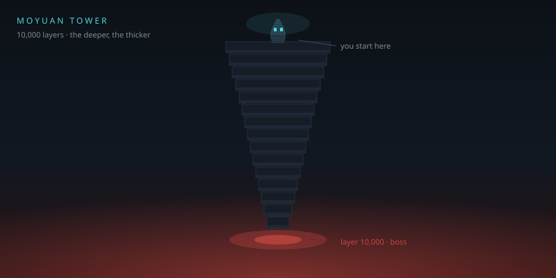
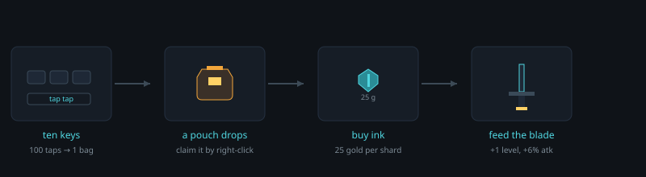
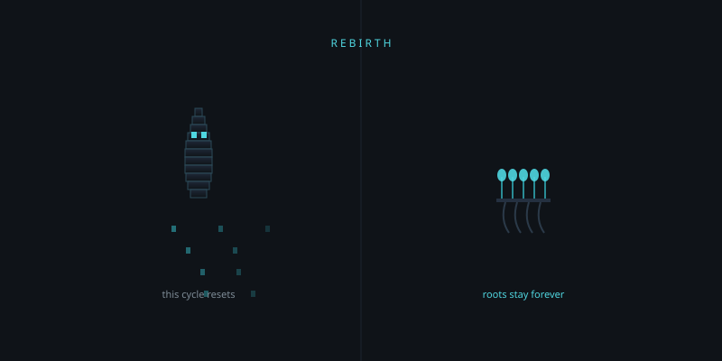
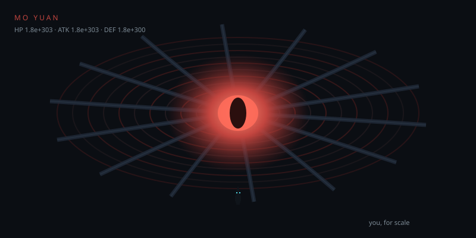

Taskbar Idle · 教程
一只住在任务栏里的墨傀
它自己打怪、自己爬塔，你只需要偶尔右键看一眼。没有弹窗、不抢焦点、不进任务栏——关掉这个教程，它还在原地干活。

01这是什么
《键灵》是一个纯后台的挂机小游戏。它没有主窗口，只在一个地方露面：状态栏（系统托盘）里的那个墨滴图标。
0弹窗 / 通知 / 打断
288px唯一的交互面板宽度
- 右键（或左键）点托盘图标 → 展开面板，一切操作都在这里。
- 鼠标只是悬停在图标上 → 弹出一块只读小提示：层数、HP、状态、待领。
- 双击图标等于开/关面板。失焦自动收起，像系统菜单一样。
- 程序只在后台跑，任务栏不出现按钮，Alt+Tab 里也找不到它。
唯一会打开新窗口的地方，是你现在看的这个教程（设置 ▸ 打开教程）。其余一切都在那块 288 宽的小面板里完成。
02五分钟上手
你什么都不用做，它已经在打第 1 层的怪了。想更快一点，就敲键盘——每一次敲击都算数。

| 时间 | 发生了什么 | 你要做的 |
|---|---|---|
| 0–1 分钟 | 自动打怪，掉金币与经验 | 什么都不用做 |
| 约 7~10 分钟 | 敲满 500 次 → 掉一个金币袋（每天最多 40 袋 = 20,000 敲） | 右键 → 领取 |
| 约 5 分钟 | 攒够 50 金币 → 能买 2 颗墨晶 | 商店 → 买墨晶 → 本命器 → 强化墨刃 |
| 10 分钟 | 墨刃 +3 左右，第 10 层守层者 | 看它自己下潜就行 |
键盘敲击只计次数，不记录你敲了什么
隐私：程序只统计"敲了多少下"，不记录键值、不记录顺序、不落盘任何输入内容。关掉「设置 ▸ 敲击监听」后会注销系统级监听。
03本命四器
墨傀是墨长成的，身上这四件不是装备，是它身体的一部分：不能换、不能脱、不能分解，只能一直喂。所以每次回来你只有一个判断——钱够不够再喂一级。
| 本命器 | 主属性 | 起始 | 每 +1 级 | 成本系数 |
|---|---|---|---|---|
| 墨刃 | 攻击 | +10 | ×1.06 | 1.00（基准） |
| 墨衣 | 生命 | +120 | ×1.06 | 0.70（最便宜） |
| 墨眸 | 暴击率／暴伤 | +2.0% | +0.15% 暴击 +0.1% 暴伤 | 5.00（最贵） |
| 墨印 | 防御 | +4 | ×1.06 | 1.15 |
全作唯一的策略点：四件单价差得很大（0.70 / 1.00 / 1.15 / 5.00），同等级四件齐喂约等于只喂墨刃的 7.85 倍。只喂墨刃能跟住塔，四件齐喂只能跟住三分之一到一半。想爬得动，就得先放弃几件。
暴击没有终点，但也不会失控：暴击率墨眸最多给 30%（200 级给满，全局上限 60%，余下 30 个点留给以后的系统）；暴伤每级只 +0.1%、不封顶，想练就一直能练。慢到什么程度？200 级平均 ×1.22、1000 级 ×1.48、1 万级 ×4.36、练到 10 万级也只有 ×33——永远不会出现「一次暴击直接秒 boss」。
强化成本：ceil(2 × 1.07^(n−1) × 件系数) 颗墨晶。注意成本曲线（1.07）比怪物变强（1.06）快得多——这是故意的，不然你永远不需要转生。
升级：需求 = 本轮最高层单只经验 × (2 + 0.58 × √层数)。第 1 层约两只小怪一级，300 层要一层怪，3000 层要两三层的量。越往上越慢，不会越打越快。
04墨根与转生
爬到某个层数后，你会发现一层要打十几分钟。那不是卡住，是塔在提醒你：该散了。

一句话
1 点墨根 = 永久领先 1 层。
| 条件 | 结算 |
|---|---|
| 本轮最高层 ≥ 50 | 墨根 += floor(0.35 × 本轮最高层)，最低 +1 |
| 重置 | 当前层 → 第 1 层；等级 → 1；经验 → 0；金币、墨晶、待领金币袋清零 |
保留
- 四件本命器与全部强化等级
- 墨根、统计、设置
- 每日礼包领取位
清零
- 当前层数与本轮最高层
- 等级与经验
- 金币、墨晶、待领金币袋
界线是「能不能带走」：喂进本命器的墨晶已经变成永久等级，那是投入，留下；躺在账上的钱是现金，带走。所以转生前最好先把墨晶花光——转生没收现金，不没收投入。菜单上写的是 转生（+175 墨根），点一次变「⚠ 确认转生」并在右侧提示「金币墨晶清零」，10 秒内再点才执行。
05层数与跳层
塔一共 10,000 层。每层 10 只：第 5 只是精英（更硬、多掉 1 颗墨晶），第 10 只是守层者（最硬、掉 3 颗墨晶），打赢守层者就自动下潜一层。
| 走法 | 规则 |
|---|---|
| 持续爬塔（默认） | 打败守层者自动下一层；连败 3 次退 1 层 |
| 定层驻守 | 赢不推进、输不退，层数冻结；可一直刷同一层攒材料 |
| 跳层 | 只能去本轮已通过的层；输入框直接输层号，或用 ±10 微调 |
| 自动回退 | 独立开关；驻守时自动置灰（冻结优先） |
06墨潮与墨渊
第 9,000 层起，墨稠到会自己涌上来——叫墨潮。怪物血量、攻击、防御、金币、经验全线每层额外 ×1.11，但墨晶掉落不涨。这是一段"明知道难、收益也涨"的冲刺。

| 阶段 | 层数 | 怪物血量（量级） |
|---|---|---|
| 寻常 | 1 ~ 999 | 50 ~ 9.1e+26 |
| 深处 | 3,000 | 3.9e+77 |
| 墨潮起点 | 9,000 | 2.7e+229 |
| 墨潮拉满 | 9,999 | 9.6e+299 |
| 墨渊 | 10,000 | 1.8e+303 |
| 万层之后 | 10,000 ~ 100,000 | 墨潮停涨，回到 1.06^层 常规曲线；10 万层约 3e+2560 |
打赢墨渊不是结束：可以回卷（层数归 1、轮次 +1，货币、强化、墨根全部保留），也可以继续往 10 万层爬。真正的墙是强化成本
×1.07/级——不是你被某个数字挡住，是算账算到那一步。07商店与概率
金币只有一个去处：商店。卖的东西只有两类。
| 商品 | 价格 | 说明 |
|---|---|---|
| 墨晶 ×1 | 25 金币 | 强化材料，唯一硬通货 |
| 墨晶 ×10 | 250 金币 | 无折扣，只是少点几次 |
| 补到够升下一级 | 差额 × 25 | 一键买齐，钱不够按买得起的量买 |
| 墨匣 ×1 | 250 金币 | 盲盒，开出随机金币或墨晶 |
墨匣 7 档概率（明牌）
| 内容 | 概率 | 折合金币 |
|---|---|---|
| 金币 ×100 | 30% | 100 |
| 金币 ×300 | 20% | 300 |
| 金币 ×750 | 8% | 750 |
| 墨晶 ×1 | 25% | 25 |
| 墨晶 ×5 | 10% | 125 |
| 墨晶 ×15 | 5% | 375 |
| 墨晶 ×60（匣底沉金） | 2% | 1,500 |
期望回报约 217.5 / 250 ≈ 87%。它是"花点闲钱换波动"的东西，长期开一定亏，不存在刷金币的正期望。
08常见问题
| 问题 | 答案 |
|---|---|
| 血量归零会死吗？ | 不会。力竭 → 休整 120 秒 → 重组成满血。等级、货币、强化一件不少。 |
| 关掉电脑会丢进度吗？ | 不会。每 30 秒自动存档；下次启动按离线时间结算（上限 8 小时，效率 60%）。 |
| 它记录我打了什么字吗？ | 绝对不。只统计敲击次数，不取键值、不落盘内容。 |
| 为什么没有音效和动画？ | 它是常驻后台的小东西，任何动画都在吃你的电。全程序禁逐帧动画，状态一变就直接切。 |
| 能不能自动转生？ | 不做。转生是全局仅有的两处"大决定"之一，必须你自己按。 |
| 想从头开始怎么办？ | 设置 ▸ 危险操作 › 初始化重置。点一下底纹变黄、再点变橙、第三下才真的清零——这是全局唯一不可撤销的操作，连设置和统计一起归零，日志保留。 |
| 放在哪个目录？ | 存档与日志在 %LocalAppData%\KeySpirit\。 |